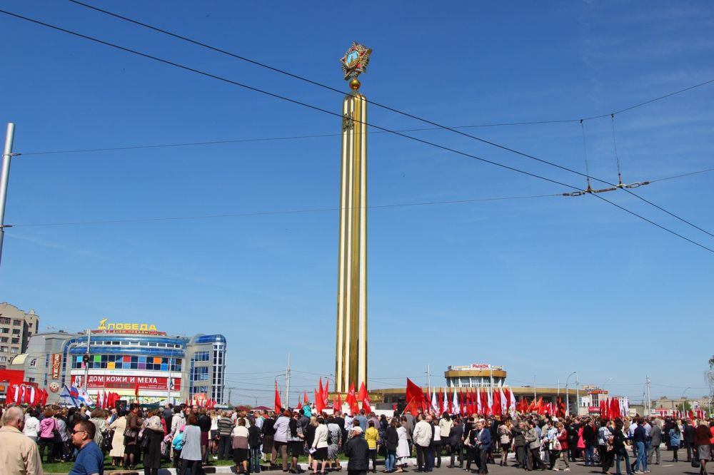

Места нашей области, посвящённые Великой Победе
Домой
Стела на площади Победы
Площадь Победы — одна из центральных площадей города Липецка. Расположена в Советском округе на пересечении улиц Терешковой, Советской, Первомайской, Неделина и проспекта Победы.
До 2005 года через центр площади проходили трамвайные пути. Они шли по улице Терешковой и заворачивали на улицу Неделина (с площади) и Первомайскую улицу (на площадь). Ныне газон в центре площади Победы превращен в цветочную клумбу.
8 мая 2015 года в центре площади был открыт памятник Победы, созданный скульптором И. Мазуром по инициативе ветерана Великой отечественной войны П. Кащенко[1]. Памятник представляет ансамбль из стелы, к которой ведут 4 ступени. Стела увенчана Орденом Победы.
Изображения:
